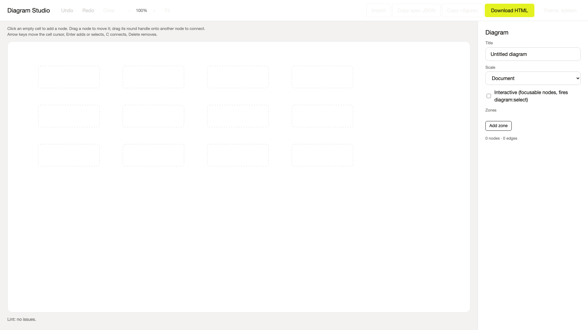
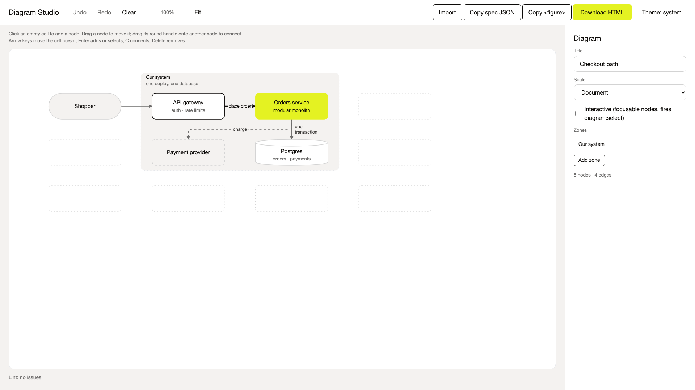
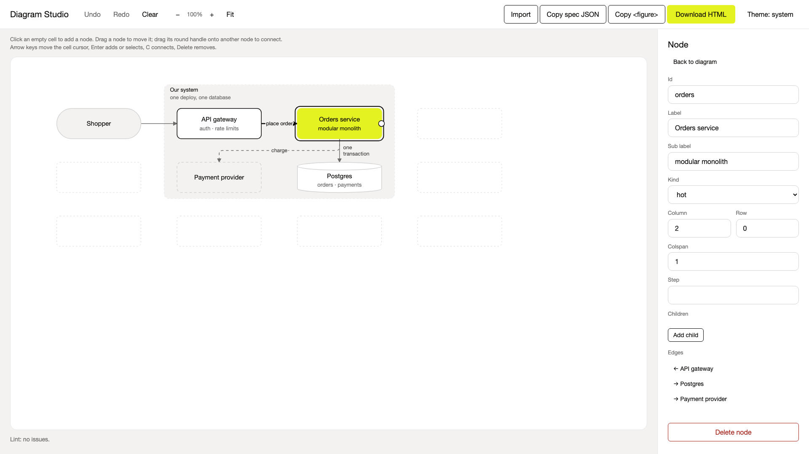
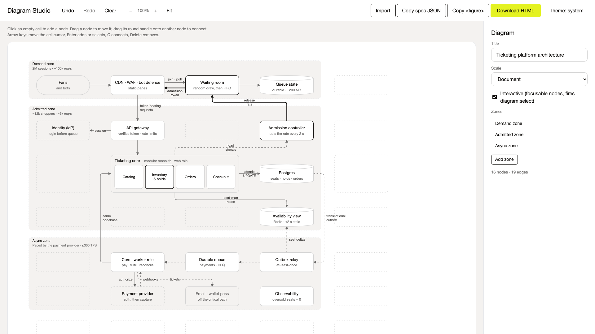
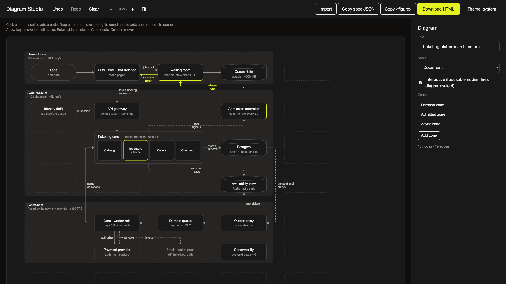

Diagrams that cannot overlap.


Nodes snap to the grid.
Edges route through the gutters.

Sixteen nodes.
Three zones.
Zero overlaps.

Light or dark.
Same diagram.
One HTML file. Nothing ever overlaps.